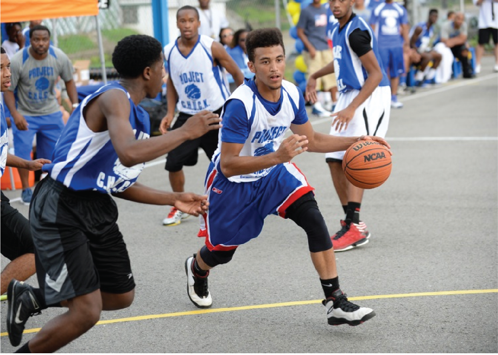

Best of the Batch Foundation: Project C.H.U.C.K.
Team
- Benjamin Junker
- Shreeyagya Khemka
- Sung Jin Kim
Opportunity
Project C.H.U.C.K. is one of the many programs Best of the Batch offers to serve children in the local community. It is a summer program which allows children of various ages to participate in a basketball tournament. The event has over 300 children register every year and as such requires an automated information management system. Over the past two years, Best of the Batch has worked with Carnegie Mellon students to produce such an application. However, the application could be improved by increasing security, providing additional analytics, enabling data persistence, and providing team management systems.
Outcomes
The major outcomes of this project are: a redesigned user experience, added administrative features, and improved security measures. Our redesigned user experience includes a new registration process, guardian and volunteer account creation, guardian and volunteer portals and public team standing and schedule pages. We added administrative features such as notifications, analytics and team management systems. We improved security measures by running brakeman tests and by removing sensitive data once it had been signed off on.
Deliverables
The final deliverable is a web application (projectchuck.herokuapp.com) deployed on Heroku linked to a Postgres database with Amazon S3 being used to store images.